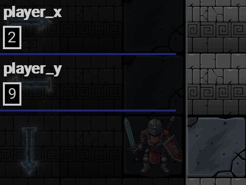

Player wiki noticeThis community-maintained page may contain gameplay, story, and mature-content spoilers.
Dungeon 和 Dragon Coin 指南 双鱼座指南
本指南涵盖了古代的Catacombs,其目前的进化门,固定的迷你门,隐藏路线,火山终极深度通过50层,独立的无穷敦煌,以及目前的龙胆经济. 作战指南.
破坏勘探者: 本页面列出守护者姓名,隐藏墙坐标,后期区域,以及游戏游戏奖赏. 主要的叙事结果和受保护的角色启示被留给游戏.
社区信贷
13楼的农耕理念和几个早期的地牢小费被Larsun和其他社区玩家所普及. 提示和诡计页面。该作品启发了本指南,并被贷记在维基的 CC BY-SA 4.0 许可证下。然后根据当前游戏执行情况检查以下细节并大幅扩展。
快速回答
- 输入通过 中世纪 – 村落外裙 – 修道院文稿 – 地下 Catacombs – 探索古代 Catacombs.
- 你从每20x11层的右下方开始,下方楼梯靠近左上角。
- 找到地板 键打开保护楼梯的门然后下降 锁定 可以打开门没有钥匙。
- 每一个成功的下降 永久解锁地板在入口地板采摘器。
- 重新进入楼层会产生新的布局和新的随机奖励,离开后部分探索的地图无法保存.
- 流动费用 每块4分钟时间布法和 舰队脚步 双方申请时,每次取消1分钟,最少2分钟。
- 13楼保证每代都有一个水下龙笼瓦,但实际上需要 游动.
- 普通的龙胆瓷砖 16%的发电机会,每层最多一个。它们通常不会在41至45层产生。
- 目前普通地牢的终点是 50楼;第46–50层是火山终极深度.无穷渊是单独的无尽模式.
在第一次降级之前
游戏在进入前立即自动保存。您也可以随时使用退出按钮或逃逸离开。
有用的准备,大致按优先顺序排列:
- 携带医药,恢复健康,能源,冷静,满足.
- 装备您可以得到的最佳装甲。每个有效的装甲级别都会移除 2次损坏 从受影响的地板陷阱, 下至0。
- 学习 游动 13楼前,没有它, 水砖是无法进入的。
- 学习 锁定 以绕过密钥要求并打开胸口,而不论数据。
- 学习 舰队脚步 减少旅行时间和饥饿积累。
- 如果你想要长跑,就带上时间布法
- 学习 采矿 如果您想要快捷键和资源片段,请携带拾轴。
- 保留龙币的储备,而不是将每枚硬币都花在随机事件上,几个独特的升级需要它们.
核心层循环
每个普通楼层都是作为迷宫产生的:
- 从入口开始 (18, 9).
- 探索钥匙和任何奖赏
- 靠近下楼梯的门。
- 用钥匙或者锁锁
- 踩在下楼梯附近 (1, 1).
降级更新您到达的最高层。下次您从目录中进入时,从1层到最高法律层的每层都可以直接选择 。
升华还生成了上层的新鲜副本。 离开和重新进入也一样。这就是为什么13层水下硬币等固定的地板资源可以耕作。
时间和饥饿
每一个转动的瓦片花费时间:
| 设置 | 每次正常移动的分钟数 |
|---|---|
| 无减少 | 4 |
| 时间布夫或舰队脚 | 3 |
| 时间布夫和舰队脚 | 2 |
敦煌饥馑使用正常的日食公式:每1,440分钟有100次饱食,一旦至少7.2分钟过后,就适用累积亏损,然后轮回到最近的点. 完美的代谢 将损失减少25%。
在长时间探索中, 食品瓦有助于:
| 平铺 | 恢复满足状态 |
|---|---|
| 苹果公司 | 10–25 |
| 面包 | 25–35 |
| 肉类 | 30–50 |
| 13楼的鱼 | 5 |
挖墙要花10分钟,有些陷阱和场景需要更多时间。
钥匙、胸部、头骨和障碍物
钥匙和门
通常只有一个钥匙和一个进取门。一个带钥匙打开门; 锁定打开门而不消耗一个钥匙。 钥匙在更换地板时重新拥有 。
胸围
每个普通楼层都试图放置一个胸口。
- 30+2×(底 - 1)
- 30+2×(地板−1)
其金赏50+25×楼+0–30.
骷髅
每个正常的地板都试图放置一个头骨。它每个生成的地板进行一次幸运测试:
- 第1至35和第41至50层:经修改的 " 幸运 " 推出100个
- 36-40楼:运气推广500
成功授予的黄金范围与胸膛相同。 头骨不能在同一生成的地图上重新测试 。
水、血液和障碍物检查
- 水域: 没有游泳就不行
- 21–25楼的血迹: 总是可以变换的,但每一步都排出5 能量而不将能量降低到1以下.
- 弹头 : 原力20+地板移动到一边; Telekinesis 允许您通过时没有进行强度检查。
- 巨怪: 通常需要原始的强度 30 + 2 × 楼层 。 Void 深度使用50%的成功率,在失败时使用 10–30 的损伤率; 正常的终深度使用50%的成功率, 最大健康命中率为 3– 8%, 失败时使用运动转动时间。
- 诡计门: 需要原始创意 35。
陷阱和装甲
早期的地板混合了尖刺,蜘蛛,蜂鸣锯,熔岩,气体,陷阱门,流沙,冰块等检查。 损伤一般随着地板的深度而上升。 后期的主题增加了它们自己密度更大的危害。
有效的装甲将许多直接的底盘命中量每装甲水平减少2次。它并不能使每一项环境影响都安全:能源排水、强迫移动、时间损失、特殊情景损害,以及一些后期机械师使用不同的规则。
观念对普通的钉子特别有用,它们的要求是30+(底−1)Void,机械危险则使用它们自己的成功规则。
采矿地牢墙
与 采矿 和至少一个 pickaxe, 连续三次点击相邻的内墙以打破它。 更改目标重置命中链 。
破墙:
- 在这个优先级中消耗一种 pick:铁、铜、钻石;
- 总费用为10分钟;
- 为生成的地图创建一个永久通道;以及
- 授予一个随机碎片:铁戈特、银戈特、米斯里尔戈特、矿物集群、晶体或Gem。
边界墙和主动的秘密通道墙是不能布雷的,机械墙炮塔使用单独的两重夹克轴交互,可以产生组件.
集会和地图编制
地牢是个 20栏,11行迷宫,使用零坐标。使用方向控制走。成功的正常动作会消耗时间和饥饿;遇到墙壁通常不会收取成功动作的费用,而一些失败的特殊危险则有其自身的时间成本。
普通可走的地板有一块 17% 一次行动遭遇卷。在选择了相遇后,通常的分割是 35%的情况/65%的战斗, 战斗前连续两次出现。 缺失的合格情况会回到战斗中。 优先角色或格斗者团体的赏金相遇可以取代这一选择。 水和血液有自己的相遇池; 血液产生战斗而不是普通情况分裂。
41–45楼使用他们的机械情景池;46–50楼使用他们的史诗情景池. 他们的17%的交锋卷和35/65的拆分仍然保留着,但他们并不使用早期的优先级特征选择器。无穷模式使用其单独的战斗规则。
因此,找到一个字符并不总是点击每个可见的肖像砖的问题。一些字符使用随机的行走相遇、一些固定的守护者,以及其他隐藏的边界墙。 咨询角色的指南,以确定确切的路线,而不是种植排除这种相遇的区域。
发电机检查一个钥匙与入口的连接,并可以雕刻墙壁通道来连接它。 游泳、摘锁、采矿和电信 每个障碍都解决了不同的障碍。锁定会绕过一个锁定的推进门;它不会把每个障碍都变成一个打开的瓦片。
莫瑞的敦煌相识
莫里是个流浪的灵魂收藏家 15场一次性场景 输入 普通地牢( 普通地牢)第一次见她 16-50楼;其他交会随后使用自己的地板范围,关键项目或 Sashimi/Bobo 遇到进度。她使用交会完成而不是一个普通的NPC关系表。
见 Morrie——敦煌会议 所有15场景, 确切的先决条件, 楼层规划员 和完成建议。 无穷模式不会触发这些情景.
按区域分列的环境危害
这些规则涵盖 勘探损害,与战斗页的敌人攻击计算相分离。 每个有效装甲水平受损2次。积分排水、叠加、特殊情景效应和百分比危险可以使用不同的处理器。
| 危险 | 目前勘探规则 |
|---|---|
| 普通钉子 | 修改后至少30+地板的感知 - 1 避免了它们;否则在陷阱装甲之前,基础损伤 10+2 × (地板 - 1) |
| 普通蜘蛛 | 15 + 3 × (地板− 1),在陷阱装甲之前 |
| 普通的蜂鸣锯 | 基地损坏 20 + 4 × (地板− 1),在陷阱装甲之前 |
| 陷阱门 | 修改后的感知 25+ 避免掉落;否则会改变生成的地板, 但须遵守自己的门处理程序 |
| 烈火笼罩 | - 5 受影响移动的健康;盾牌布夫或火元素塔力斯曼防止 |
| 过量的毒药覆盖 | -8每一次受影响的行动的健康;盾牌布夫阻止 |
| Void 气体覆盖 | - 10每一次受影响行动的健康;通常的豁免并不妨碍 |
| Void 超新星区 | 进入周围的3×3区排水区 随机1-30 |
| Void 钉 | 60%避免机会;故障在陷阱装甲之前,将损坏1至20+2×层 |
| Void 巨怪 | 50%的机会清除障碍;失败处理10-30个损害 |
早期的Stat阈值并非通用的后期避免公式. 机械的stat陷阱推出500个; 最终深度巨怪使用自己的百分数健康规则.
有用的普通回收瓦包括: 喷泉 恢复健康, 圣迹,以及 营火。圣殿治愈 15+楼层(神秘QQ 5) 20度以下,或 25+ 楼层(神秘QQ 3) 在 Mystic 20+ 中, 使用经修改的 Mystic; 原始的魅力 18+ 也给出了 10 个平静。然后它被消耗。 普通的营火将健康和能源恢复到最大并给予 15-40 满意;经过修改的技术 18+ 也恢复了平静。休息后消耗。
机械深度参考
楼层 41–45 添加一个单独的机器瓦片集。再进入会产生新的危险和奖励;其放置百分比描述尝试,而不是保证每个可选的瓦片都将出现在每张地图上。
| 砖块或障碍物 | 怎样做 怎样改变 |
|---|---|
| 技术、情报、感知陷阱 | 对1–500进行修改后命名为Stat的滚动;故障排出10–20 能源 |
| 力量、能力、能力、流氓陷阱 | 对1–500进行修改后命名为Stat的滚动;故障卷10–20通过陷阱装甲造成健康损害 |
| 失败的stat 陷阱 | 您可以退后; 试图继续前进需要另一个成功的检查 |
| 墙式炮塔/能源炮塔 | 阻塞运动; 单独的双重拾轴相互作用会破坏它并打捞部件; 附近的活动炮塔在移动时可以开火 |
| 安全屏障 | 不可移动; 锁定不把它当作普通的进化门 |
| 巨型机器人 | 修改后的力量/ 400 × 100%的机会,上限为90%;成功清除并给出了1个组件;失败处理15-40个损坏 |
| 部队实地瓦片 | 启动保护哨战斗;在相应的胜利后打开通道 |
| 等离子地雷 | 25%避免机会;故障通过陷阱装甲卷起45-90个损伤;转换成爆破地板 |
| 蜘蛛矿 | 25%避免机会;故障通过陷阱装甲和排水管造成25-55个损坏 |
| 磁铁矿 | 65%安全打捞到1个部件;否则25-50个装甲损坏 |
| 引力不错 | 排水 20 能量 将你迁移到合格的机械地板 |
| 纳米人群 | 20 -50通过陷阱装甲损坏,+1技术,然后消失 |
| 蒸气 | 分离 10 健康 命中;不使用普通的平面陷阱- 装甲减值 |
| 相机/ 警报 | 可以发动安全战;警报信标的相互作用不同于普通的随机遭遇 |
| 数据晶体 | +1 晶体并消失 |
| 救援缓存 | +1–4 组件和消失 |
| 纳诺仙女 | +1到所有玩家数据并消失 |
| 数据方尖碑 | +5智能和+5技术的50%机会;然后消失 |
| 能量配给/膳食合成器 | 将能量/满足恢复到最大并被消耗 |
| 机械充电营地 | 将健康、能源、平静和满足恢复到最大限度;消费 |
| 充电神社/ holo 圆圈 | +30 健康/能源/碳/+20 能源;其目前的处理器留下瓦片 |
| Rogue AI 核心 | 50%的+1所有统计数据的机会;失败将健康、能源和平静减半,健康至少保持1;消费 |
那个 工程师全息图 和 商务员 使用 Coins 和 组件 而不是取代 Gonzo 的早期地板店 。 初始的独有物品价格在下面的硬币购买表中。 遵循商家当前的菜单升级到已经拥有的物品 。 战斗行为 : Force Field、 Sword Chain 和 Sniper Profile 属于 作战指南.
最后深度层 46至50
现在正常的地牢 继续进入火山 最后深度,46-50层.45楼楼梯降为46楼;50楼是预定的正常终点,有最后固定的监护人, Ember,遇到第12级。本节介绍探索,而不叙述监护人的故事结果。
熔岩、马格玛和可重复的对峙
- 磁带游泳池是无法进入的他们用的是火山液体艺术而不是普通的可游泳水
- 常规最终深度生成位置 三次防火墙碰面 并尝试一只蜘蛛,一只响尾蛇和一只巨怪。 玛格玛元素战 之后仍为防火墙所以再走过去就能重蹈覆辙
- 斯派克斯仍然使用普通的感知阈值和陷阱损坏缩放。在50楼,阈值是 79 观念;未避免的尖刺有108个基部损伤,蜘蛛162,锯216,在陷阱装甲之前.
- 终极深度巨怪给出 50% 每个尝试都有明确的机会,失败交易 最高健康水平的3-8%而不是早期的原始结构要求或Void固定的10到30个破坏。
- 营火和愈合神社 都有18%的世代尝试 这里 营火/ Shrine 恢复使用上面的正常公式。
- 被诅咒的祭坛: +2 至 随机主调值的机率为 70%; 25 + 3 × 地板损坏的机率为 30% 。这是一次平稳的机率,而不是早期的智能检查 。
- 普通的龙骨瓷砖 16%的世代尝试。通常的食物瓷砖、冈诺、沃特、普通仙女和早期可见的人物反面瓷砖不会在这里产生。带食物而不是期待苹果/面包/肉质瓷砖。
- 随机行走的情景 史诗池,而不是旧的普通字符优先级。 1%的安置尝试 在符合资格的普通最终深度地图上。
与其他区域一样,有保障或基于百分比的安置仍然需要合格的空瓦。 三个防火墙并不意味着三个不同的新的叙事场景。
实用最终注册运行
- 完成机械深度路由,从45层下降 。当您的内容访问允许时, 直接在后面的条目上选择一个已经到达的 最终深度层 。
- 恢复资源,带食物和药品,在进入之前装备盔甲,在这些深度的固定陷阱基部损坏相当大。
- 环绕岩浆池的路线。在允许的情况下,使用采矿进行内墙快捷键,并收集钥匙或使用Lockpicking作为普通楼梯门。
- 对巨怪失败和重复防火墙战斗的预算健康。 清理好的战斗并不总是意味着勘探瓦片消失了。
- 如果生成回收瓦片, 则返回楼梯。 进化度在地板上一直到50度。
- 在50楼,完成任何可用的监护人和探索目标,然后离开或重新访问到楼层。通过单独的无穷入口继续无尽的下降。
当前陷阱边缘大小写
那个 50楼的楼梯和取出入口者停止正常前进。当前正常的陷阱门秋季处理器没有应用同样的50层顶盖,也没有像楼梯一样更新最高到达的地板记录。因此,意外的落地可以超越预定的终点,而不添加一个正常的可选择的地板。这是一个代码差异,而不是一个支持的51层区域或额外的章节;使用正常的楼梯记录进度。
楼层主题和里程碑
| 楼层 | 地区 | 什么变化 |
|---|---|---|
| 1–12 | 古老的废墟 | 标准迷宫, 越来越多的悬崖, 早期的守护者和情景。 |
| 13 | 底楼 | 楼层成为水面,精确的3条鱼和1条水下龙笼被放置,游泳在功能上是强制性的. |
| 14–20 | 更深的废墟 | 标准主题恢复;敌人和陷阱缩放继续. |
| 21–25 | 吸血鬼深度 | 水补丁变成血,血敌加入正常战斗,23楼包含吸血鬼城堡. |
| 26–30 | 地狱深度 | 26楼装有固定的弥诺陶尔铁匠伪造物 |
| 31–35 | 深度过大 | Audrey 植物,熊捕虫,毒藤,毒盖,以及土元素. |
| 36–40 | Void 深度 | 气体覆盖,空虚的危险, 更严厉的运气检查, 和更危险的巨怪规则。 |
| 41–45 | 机械深度 | 机械陷阱,地雷,炮塔,力场,组件,商舱,以及A. R. I. A. |
| 46–50 | 最终深度 | 火山岩图,不可移动岩浆,三次持续防火墙相遇,史诗般的场景,以及50层的守护者. |
13楼:可靠的龙币路线
13楼不仅仅是一个16%的硬币卷,它的特殊发电机正好放置了一个 水下硬币 每次楼层建成。
建议的路线 :
- 学游.
- 到达13楼一次,所以它出现在拾货机里。
- 直接进入13楼
- 搜索可航行水迷宫 寻找水下硬币.
- 离开到墓穴。
- 重新进入13楼以生成另一幅地图和另一枚硬币.
这是最有决定性的可重复的普通敦格昂硬币来源。 取舍在于移动时间、饥饿、水战,以及每跑一次都要寻找新的布局。
23楼:吸血鬼城堡
23楼使用一个固定的中央地标在周围的迷宫里 (10, 5) 并被两层血环包围。输入后可进入吸血鬼城堡的内容,并提供一个与Ruxandra相关的当前通道之一。 Ruxandra 指南 她的完整路线。
26楼:米诺陶尔铁匠
固定的铸造在附近 (3, 8) 在熔岩圈内。铁匠每次访问一次,从1 - 7级提升一个级别。
价格为当前设备水平+2龙币:
| 目前级别 | 费用 | 新级别 |
|---|---|---|
| 1 | 3 | 2 |
| 2 | 4 | 3 |
| 3 | 5 | 4 |
| 4 | 6 | 5 |
| 5 | 7 | 6 |
| 6 | 8 | 7 |
| 7 | 9 | 8 |
开始的0级齿轮不合格,铁匠不会升级8级齿轮.
45层:代理典狱长和A.R.I.A.
隐藏的墙在 (1, 6) 启动可重复的代理典狱长挑战。 取消代理典狱长以获得A. R. I. A. 门槛所需的授权。 A. R.
45层现已连接 46楼。保存时间较长的45层密封瓦片在使用时转换成下行楼梯。正常路线继续通过 50楼最后深度.
目前的楼层入口
入口拾取器和楼梯执行当前内容的应享权利:
| 门 | 当前行为 |
|---|---|
| 普通免费拾取器 | 拾荒者/建筑帽为21,没有完整的地牢地表,普通的20~21,仍需要单独付费检查。 |
| 20-21楼 | 在没有支付地牢费用的权利的情况下,血源被阻断。 |
| 35-36楼 | 需要适用的支持代码/状态。 |
| 40-41楼 | 需要当前更深的鼓动支持解锁 。 |
| 45-46楼 | 在目前的建筑中打开; 降入火山终极深度。 使用时将修复45级的旧密封楼梯瓦。 |
有了付费的地牢表面,通常的拾荒帽为50.这个盖子不会绕过额外的35楼和40楼的支持者门,达到更高的楼层记录不会绕过其入口建筑检查.
固定微型企业
这些叙事式的守护者固定在特定的地板上,并在胜利后从未来生成的地图中消失.他们列出的级别是遭遇的内部守护层,而不是地牢层.
| 楼层 | 守护者 | 相遇级别 |
|---|---|---|
| 1 | Raven | 1 |
| 3 | 光谱 | 2 |
| 5 | Whiskers | 2 |
| 7 | Lindia | 3 |
| 10 | 塞尔皮纳 | 3 |
| 15 | 莱萨 | 3 |
| 20 | 乌鸦 | 4 |
| 25 | Torea | 7 |
| 30 | Valkyra | 8 |
| 35 | Audrey | 9 |
| 40 | Nyxara | 10 |
| 45 | A. R. I. A. | 11 |
| 50 | Ember | 12 |
Miniboss的战斗使用叙事选择而不是普通的战斗屏幕。选择可能使用一个或多个统计数据或者需要技能; Mysticchoices也需要一个greenoire. Power会增加处理给迷你玩家的伤害,而Shield则会减少来迷你玩家的伤害。
超时或陷入僵局并不是胜利,而是将你从地牢中弹出。在40楼的 Nyxara 失败也会解锁用来进入无穷模式的 Void 会议厅,但须符合正常的付费/更高电源访问要求。
秘密墙路线
秘密墙看起来像普通墙,满足条件后走进列出的坐标.
| 楼层 | 坐标 | 路线或条件 |
|---|---|---|
| 2 | (2, 10) | Momosagi 营救;拥有妓院,拥有野兽20+,还没有招募她. |
| 10 | (2, 10) | Jelly相遇; 已建的和Jelly不活跃的细胞走廊. |
| 18 | (1, 6) | Myriss相遇; 已建的和Myriss不活跃的细胞走廊. |
| 21 | (2, 10) | Mandarin 营救;拥有妓院,没有收购第二女佣. |
| 22 | (1, 6) | Arachne相遇; 已建的和Arachne不活跃的细胞走廊. |
| 27 | (2, 10) | Melanthe相遇; 已建的和Melanthe不活跃的细胞走廊. |
| 29 | (1, 6) | Bessie相遇; 已建的和Bessie不活跃的细胞走廊. |
| 33 | (2, 10) | Daphne遭遇;细胞走廊建成,Daphne不活动. |
| 34 | (1, 6) | Bobo在之前两次Bobo碰面后进行救援; 建造了细胞走廊。 |
| 35 | (1, 6) | 巴巴亚加路线. |
| 45 | (1, 6) | 可重复的A.R.I.A.代理典狱长挑战. |
从那里下去到达(2,10) (是的,穿过墙)

地牢的坐标可能有点反直觉所以这里有几件事需要记住 可能会帮助你
- 当你进入地牢,你的坐标是x=18,y=9
- 到另一层的楼梯是x=1,y=1
- 屏幕左下角为x=0,y=10
对于怪物女孩遇到,如果你打算招募他们, 确定 您至少拥有 一个单元格 目前,已建造单元走廊,为您提供单元1。 但保留给Bobo。如果你想 " 抓住他们 ",你需要到7号牢房建造。
无限地板故意使这些秘密通道失效.
龙币
Dragon Coins是地牢经济的主要特殊货币,出现在消耗品库存中,但通常通过商家和情景选择使用,而不是直接消费。
可靠和随机来源
| 来源 | 币 | 重复吗? | 页:1 |
|---|---|---|---|
| 13层水下瓦片 | 每层1瓦 | 对 | 保证发电;游水需要穿越水面。 |
| 普通硬币牌 | 1 块 | 对 | 16%的机率,最多一次,在符合条件的非机械产生的地板上。 |
| 教学精灵 | 通常为 1 | 有限 | 几种辅导结果引入了货币. |
| 登革热情景 | 1–10+ | 变数 | 奖励包括被困特征救援,战斗情景,水上事件,Void事件,以及进步性格遭遇. |
| 僵尸大战胜利 | 5 | 取决于情景 | 当这种情形出现时,获得固定的胜利奖赏。 |
| 阿拉奇尼德巢穴的胜利 | 3 | 取决于情景 | 当这种情形出现时,获得固定的胜利奖赏。 |
| 黑骑士/克苏鲁胜利 | 5 / 10 | 取决于情景 | Void 深度实例。 |
| 机械武器缓存 | 1 | 随机生成 | 也授予元件和黄金. |
| 无穷模拟奖金 | 1 | 随机 | 在一场无限的胜利之后, 一次可能的奖金下降。 |
| Kupie 爱培训店 | 1 | 库存刷新 | 上市价为1,000,000美元;股票有其补货规则,而目前的商店也执行每场比赛日龙币购买限额. See. Kupie 爱情培训. |
许多场景的回报取决于统计检查、技能、校对选择、战斗胜利或一次性故事计数器。除非你能负担翻转地板,否则不要在随机场景周围规划农场。
最佳耕作战略
为纯可靠性起见,使用第13层:
- 开始吃饱饭 学游泳
- 装备舰队脚踏实地,如果有时间布法的话使用时间布法.
- 进入13楼从采摘者, 收集其水下硬币, 并退出。
- 复说.
为了更好的整体价值,清晰的整层符合条件。 一层可以将16%的硬币卷与胸膛、头骨、情景、战士协会的目标、食物和战斗投放结合起来。 完全清除每枚保证金币的速度较慢,但同时推进几个系统。
冈诺的店
冈诺在符合资格的普通楼层有10%的安放机会。他没有出现在Void,机械,或最终深度。 谈判时,他购买的五币大部分是一枚硬币,水晶则有两枚。
| 购买 | 正常费用 | 与谈判 | 限制/影响 |
|---|---|---|---|
| 将melee武器升级为 1 | 5 | 4 | 目前等级0-4;达到等级5. |
| 装甲升级1 | 5 | 4 | 目前等级0-4;达到等级5. |
| 随机非专属技能手册 | 5 | 4 | 从您目前可以学习的技能中选择 。 |
| 医药 | 1 | 1 | 没有谈判折扣。 |
| 随机+2 核心静态灵丹 | 5 | 4 | 在十个主要数据中随机出现. |
| 晶体×1 | 25 | 23 | 现价;支出前小心节约. |
其他重要硬币采购
| 卖方或事件 | 费用 | 结果 |
|---|---|---|
| 蠕虫 | 1 | Monster Tonic 或 Smelling Salts. Wort 需要细胞走廊,并出现在符合条件的普通1–35楼. |
| Goblin 血球交易商 | 5 | 一个血球。 |
| 邪恶的妖精 | 1 | +1 Luck;欺骗可以替代一枚普通金币. |
| 老渔夫 | 5 | 学拜特大师或上钓鱼课,当合格. |
| 海巫师 | 3 | 一剂. |
| 恶魔兄弟会 | 3 | 五种服务奖励之一(详见下文). |
| 弗莱什雕塑师讲习班 | 3或2与谈判 | +3 吸引力(45分钟, -15分钟) |
| Goblin 商贸公司 | 7或6与谈判 | 提升1-3级专业装备、正规服装或约会服装。 |
| 米诺陶尔铁匠 | 3–9 | 提升合格的1-7级武器或装甲,每次访问一次. |
| 废掉的商船 | 1 | +1 Max HP,+1 Max Energy,或+1 Max Calm. |
| Void 向导 | 10 | 将一棵树升至5级以下。 |
| Void 向导 | 5 | +3 Max HP或+3 Max Energy. |
| 网格工程师全息图 | 1 | 一个构成部分。 |
| Mech 商机 | 20个部件+5枚硬币 | 初力场,生物反应堆核心,或Mnemonic电池. |
| Mech 商机 | 35 元件+5枚硬币 | 剑链或狙击手范围. |
恶魔布洛瑟尔方案让你在5个不同的恶魔中做出选择 要么让你学习技能 要么让你已经掌握技能的恶魔 要么助变
- 红魔:诱导技能 / +2 力量
- 黑魔:欺骗技能 / +2 Stamina
- 银魔:银舌技能 / +2 魅力
- 绿色魔王:感官掌握技能 / +2 智能
- 金魔:从普通的游泳池中学习随机技巧(这让她有效地成为"厨师"冈诺) /+2 诱惑力,如果你全部拥有的话
附加的一次性或随机方案可以收取1–10枚硬币,用于服务、统计变化、记忆、设备增强、通过、赌博或故事选择。 总是读取全部选择文本:一些选项永久更改统计数据或消耗所有目前持有的币种和组件。
支出优先事项
一个实际的命令是:
- 保留5枚硬币,用于独特的技能,血球,钓鱼或情景机会.
- 如果正常的黄金升级落后,利用冈诺将0–4级武器和装甲高效提升.
- 当选择有利时, 购买永久最大资源或调值增加 。
- 为您想要的每个独特的机械深度密钥项目保存5枚硬币加组件.
- 只有在你特别需要Crystal的时候 才能买下Gonzo的Crystal而且没有便宜的收购路线
谈判是硬币支出最强的经济技能之一。它降低了整个冈诺和几个随机商家的成本,尽管不是每个卖家都尊重它。
当前接车差异
对普通或水下硬币的奖励是一枚龙币,在目前的相互作用代码中,第一个皮卡可以通过神秘物品的发现添加一枚硬币,然后无条件添加另一枚硬币。因此,新鲜的储蓄可能会收到。 首枚可见硬币的两枚库存硬币 尽管瓷砖和电文描述的是其中之一,但后来的皮卡通常会授予其中之一。
这是执行上的差异,不是第二层13瓦的保证值。在调整取车逻辑之前,将库存总数视为权威。
无穷敦煌
无穷模式与一般的地牢分开,一般地牢的终点是50楼. 完整的无穷敦煌指南 给现在的老板,贴补,危险,抢掠,和规模。
要解锁其入口:
- 到达40楼的普通地牢。
- 败Nyxara.
- 回地下墓穴,进入新开的Void室.
- 满足动作的付费版和更高电源要求.
无穷模式有:
- 没有楼顶,没有支持门层之间;
- 其最高层采油机;
- 每个生成的楼层都有随机的普通鼓风视觉主题;
- 战斗从整个敌方池中进行,有敌方的衬衫和装饰;
- 没有NPC情景、固定微型企业、战士协会或秘密墙壁;
- 其标准陷阱集的平面40%激活行为,忽略了正常的Stat避免;
- (a) 30%的机会使胸口开口成为模仿品;
- 更深的敌人和危险程度 是基于真实的无尽底 而不仅仅是选择的视觉主题
降级或从陷阱门掉下来会解锁下一个无限层。 离开会保留到达的最高层,但丢弃当前生成的地图 。
常见故障
我不能在13楼动了
学习游泳 特殊发电机将可行走的地板网络转换为水.
门不会打开的
搜索密钥, 或学习锁定。每层新生成的密钥重置 。
拾货的地板消失了
拾取器被当前内容权限所限制,即使输入的保存记录最高。如果没有付费的地牢表面,它不会建造超过21层的地板 。
我无法从35楼或40楼下降
这些是单独的当前支持码门。 解锁普通付费的地牢表面并不能自动满足两个更深的门。
我赢了,小老板回来了
确保遭遇以真正的胜利结束。 暂停、 抽取、 退缩或 Stat 耗尽不会设定持续击败的旗帜 。
我打败了A. R. I. A.
目前的建筑包括46–50楼。 使用45楼向下楼梯;该楼层保存的旧的密封楼梯瓦片在触碰时被转换。请检查您是否正在运行目前的建筑,您的全部地牢通道是否正常。 正常的楼梯结束于50楼。 Infinity 模式是分开的 。
来源审计说明
检查过了 2026年10月4日 (中文(简体) ). 相对于当前地牢生成器、移动和交互处理器、地板拾取器、微型机登记器、情景文件、商家菜单、库存发现功能、无穷模式和保存状态衍生物。随机内容百分比描述生成尝试;如果没有合格的瓦片保留,放置仍然会失败。
相关页面
Dungeon and Dragon Coin Guide
This guide covers the Ancient Catacombs, their current progression gates, fixed minibosses, hidden routes, the volcanic Final Depths through Floor 50, the separate Infinity Dungeons, and the current Dragon Coin economy. Ordinary battle formulas are explained in the Combat guide.
Exploration spoilers: This page lists guardian names, hidden-wall coordinates, later regions, and gameplay rewards. Major narrative outcomes and protected character revelations are left to the game.
Community credit
The Floor 13 farming idea and several early dungeon tips were popularized by Larsun and other players on the community Tips and Tricks page. That work inspired this guide and is credited under the wiki's CC BY-SA 4.0 license. The details below were then checked against the current game implementation and expanded substantially.
Quick answers
- Enter through Medieval Era → Village Outskirts → Monastery Scriptoria → Underground Catacombs → Explore Ancient Catacombs.
- You begin on the bottom-right side of each 20×11 floor. The downward stairs are near the top-left.
- Find the floor's key, open the door protecting the stairs, and descend. Lockpicking can open the door without its key.
- Every successful descent permanently unlocks that floor in the entrance floor picker.
- Re-entering a floor generates a new layout and new random rewards. A partially explored map is not preserved after leaving.
- Movement normally costs 4 minutes per tile. The Time buff and Fleet Footed each remove 1 minute, for a minimum of 2 minutes when both apply.
- Floor 13 guarantees one underwater Dragon Coin tile on every generation, but practically requires Swim.
- Ordinary Dragon Coin tiles have a 16% generation chance, with at most one per eligible floor. They do not generate normally on Floors 41–45.
- The current normal dungeon's intended endpoint is Floor 50; Floors 46–50 are the volcanic Final Depths. The Infinity Dungeons are a separate endless mode.
Before the first descent
The game autosaves immediately before entering. You can also leave at any time with the exit button or Escape.
Useful preparation, roughly in priority order:
- Carry Medicine and restore Health, Energy, Calm, and satiation.
- Equip the best armor you can obtain. Each effective armor level removes 2 damage from affected floor traps, down to zero.
- Learn Swim before Floor 13. Without it, water tiles are impassable.
- Learn Lockpicking to bypass the key requirement and open chests regardless of stats.
- Learn Fleet Footed to reduce travel time and hunger accumulation.
- Bring the Time buff if you expect a long run.
- Learn Mining and carry pickaxes if you want shortcuts and resource fragments.
- Keep a reserve of Dragon Coins instead of spending every coin on random events. Several unique upgrades require them.
See Combat System guide, Mining guide, Stats, Skills & Proficiencies guide, and Items guide for the systems behind combat, equipment, skills, and consumables.
The core floor loop
Each ordinary floor is generated as a maze:
- Start at the entrance near (18, 9).
- Explore for the key and any rewards you want.
- Reach the door near the downward stairs.
- Use the key or Lockpicking.
- Step on the downward stairs near (1, 1).
Descending updates your highest reached floor. The next time you enter from the catacombs, every floor from 1 through that highest legal floor is directly selectable.
Ascending also generates a fresh copy of the previous floor. Leaving and re-entering does the same. This is why fixed-floor resources such as the Floor 13 underwater coin can be farmed.
Time and hunger
Every traversed tile costs time:
| Setup | Minutes per normal move |
|---|---|
| No reduction | 4 |
| Time buff or Fleet Footed | 3 |
| Time buff and Fleet Footed | 2 |
Dungeon hunger uses the normal day-long satiation formula: 100 satiation per 1,440 minutes. It applies accumulated loss once at least 7.2 minutes have passed and rounds to the nearest point. Perfect Metabolism reduces this loss by 25%.
Food tiles help during long explorations:
| Tile | Satiation restored |
|---|---|
| Apple | 10–25 |
| Bread | 25–35 |
| Meat | 30–50 |
| Fish on Floor 13 | 5 |
Mining a wall costs 10 minutes when it breaks. Some traps and scenarios consume additional time.
Keys, chests, skulls, and barriers
Key and door
There is normally one key and one progression door. A carried key opens the door; Lockpicking opens it without consuming a key. Key possession resets when changing floors.
Chest
Each normal floor attempts to place one chest. Open it with Lockpicking or meet either of these raw-stat checks:
- Strength ≥ 30 + 2 × (floor − 1)
- Ability ≥ 30 + 2 × (floor − 1)
Its gold reward is 50 + 25 × floor + 0–30.
Skull
Each normal floor attempts to place one skull. It performs one Luck test per generated floor:
- Floors 1–35 and 41–50: modified Luck roll out of 100
- Floors 36–40: Luck roll out of 500
Success awards the same gold range as a chest. A skull cannot be retested on the same generated map.
Water, blood, and obstacle checks
- Water: impassable without Swim.
- Blood on Floors 21–25: always traversable, but each step drains 5 Energy without reducing Energy below 1.
- Boulder: raw Strength 20 + floor moves it aside; Telekinesis lets you pass without that Strength check.
- Troll: normally requires raw Strength 30 + 2 × floor. Void Depths use 50% success with 10–30 damage on failure; normal Final Depths use 50% success with a 3–8% maximum-Health hit and a movement turn's time on failure.
- Trick door: requires raw Creativity 35.
Traps and armor
Early floors mix spikes, spiders, buzz saws, lava, gas, trapdoors, quicksand, ice, and other checks. Damage generally rises with floor depth. The later themes add their own denser hazards.
Effective armor reduces many direct floor-trap hits by 2 damage per armor level. It does not make every environmental effect safe: Energy drains, forced movement, time loss, special scenario damage, and some late mechanics use separate rules.
Perception is especially useful against ordinary spikes. Their requirement is 30 + (floor − 1). Void and mechanical hazards use their own success rules instead.
Mining dungeon walls
With Mining and at least one pickaxe, click an adjacent interior wall three consecutive times to break it. Changing targets resets the hit chain.
Breaking a wall:
- consumes one pickaxe in this priority: Iron, then Copper, then Diamond;
- costs 10 minutes total;
- creates a permanent passage for that generated map; and
- awards one random fragment: Iron Ingot, Silver Ingot, Mithril Ingot, Mineral Cluster, Crystal, or Gem.
Border walls and active secret-passage walls cannot be mined. Mechanical wall turrets use a separate two-hit pickaxe interaction and can yield Components.
Encounters and Map Preparation
The dungeon is a 20-column by 11-row maze, using zero-based coordinates. Walk using the directional controls. Successful normal moves consume time and hunger; encountering a wall does not normally charge a successful move, while some failed special hazards have their own time costs.
Ordinary walkable floor tiles have a 17% encounter roll per move. After an encounter is selected, the normal split is 35% scenario / 65% battle, with a cap of two consecutive scenarios before a battle. A missing eligible scenario falls back to a battle. Priority character or Fighters Guild bounty encounters can supersede this selection. Water and blood have their own encounter pools; blood produces battles rather than the ordinary scenario split.
Floors 41–45 use their mechanical scenario pool; Floors 46–50 use their epic scenario pool. Their 17% encounter roll and 35/65 split remain, but they do not use the early-floor priority-character selector. Infinity mode uses its separate battles-only rules.
Finding a character is therefore not always a matter of clicking every visible portrait tile. Some characters use random walking encounters, some fixed guardians, and others hidden boundary walls. Consult the character's guide for the exact route rather than farming a region that excludes that encounter.
The generator checks a key's connection to the entrance and can carve wall passages to connect it. Later hazards or impassable liquid can still affect the practical route; Swim, Lockpicking, Mining, and Telekinesis each solve different obstacles. Lockpicking bypasses a locked progression door; it does not turn every barrier into an open tile.
Morrie's Dungeon Encounters
Morrie is a wandering soul collector with 15 one-time scenes in the normal dungeon. Meet her first on floors 16–50; the other encounters then use their own floor ranges, Key Items or Sashimi/Bobo encounter progress. She uses encounter completion rather than a normal NPC relationship meter.
See Morrie — Dungeon Encounters for all fifteen scenes, exact prerequisites, a floor planner and completion advice. Infinity mode does not trigger these scenarios.
Environmental Hazards by Region
These rules cover exploration damage, separately from the Combat page's enemy attack calculations. Many floor-trap hits subtract 2 damage per effective armor level, down to zero. Stat drains, overlays, special scenario effects, and percentage hazards can use different handlers.
| Hazard | Current exploration rule |
|---|---|
| Ordinary spikes | Modified Perception at least 30 + floor − 1 avoids them; otherwise base damage 10 + 2 × (floor − 1), before trap armor |
| Ordinary spider | Base damage 15 + 3 × (floor − 1), before trap armor |
| Ordinary buzz saw | Base damage 20 + 4 × (floor − 1), before trap armor |
| Trapdoor | Modified Perception 25+ avoids the fall; otherwise changes the generated floor, subject to its own gate handling |
| Infernal fire overlay | −5 Health per affected move; Shield buff or Fire Elemental Talisman prevents it |
| Overgrown poison overlay | −8 Health per affected move; Shield buff prevents it |
| Void gas overlay | −10 Health per affected move; the usual overlay immunity does not prevent it |
| Void supernova zone | Moving into its surrounding 3×3 zone drains random 1–30 Energy |
| Void spikes | 60% avoid chance; failure rolls damage 1 through 20 + 2 × floor, before trap armor |
| Void troll | 50% chance to clear the obstruction; failure deals 10–30 damage |
The early stat thresholds are not universal late-game avoidance formulas. Mechanical stat traps roll out of 500; Final Depths trolls use their own percentage-Health rule.
Useful ordinary recovery tiles include fountains that restore Health, shrines, and campfires. A shrine heals 15 + floor(Mystic ÷ 5) below Mystic 20, or 25 + floor(Mystic ÷ 3) at Mystic 20+, using modified Mystic; raw Charm 18+ also gives 10 Calm. It is then consumed. An ordinary campfire restores Health and Energy to maximum and gives 15–40 satiation; modified Technology 18+ also restores Calm. It is consumed after resting.
Mechanical Depths Reference
Floors 41–45 add a separate machine tile set. Re-entering generates new hazards and rewards; their placement percentages describe attempts, not a promise that every optional tile will be on every map.
| Tile or obstacle | What to do / what it changes |
|---|---|
| Technology, Intelligence, Perception traps | Roll modified named stat against 1–500; failure drains 10–20 Energy |
| Strength, Stamina, Ability, Rogue traps | Roll modified named stat against 1–500; failure rolls 10–20 Health damage through trap armor |
| Failed stat trap | You can step back; trying to move onward requires another successful check |
| Wall turret / Energy turret | Blocks movement; a separate two-hit pickaxe interaction destroys it and salvages Components; nearby active turrets can fire when you move |
| Security barrier | Impassable; Lockpicking does not treat it as the ordinary progression door |
| Giant robot | Modified Strength / 400 × 100% chance, capped at 90%; success clears it and gives 1 Component; failure deals 15–40 damage |
| Force-field tile | Starts a shielded sentinel battle; passage opens after the corresponding victory |
| Plasma mine | 25% avoid chance; failure rolls 45–90 damage through trap armor; converts to blasted floor |
| Spider mine | 25% avoid chance; failure rolls 25–55 damage through trap armor and drains 10–25 Energy |
| Magnetic mine | 65% safe salvage for 1 Component; otherwise 25–50 damage through trap armor |
| Gravity well | Drains 20 Energy and relocates you to an eligible mechanical floor tile |
| Nanite swarm | 20–50 damage through trap armor, +1 Technology, then disappears |
| Steam | Separate 10-Health hit; does not use the ordinary flat trap-armor subtraction |
| Camera / alarm | Can initiate security battles; an alarm beacon's interaction is distinct from an ordinary random encounter |
| Data crystal | +1 Crystal and disappears |
| Salvage cache | +1–4 Components and disappears |
| Nano fairy | +1 to all player stats and disappears |
| Data obelisk | 50% chance for +5 Intelligence and +5 Technology; then disappears |
| Energy ration / meal synthesizer | Restores Energy / Satiation to maximum and is consumed |
| Mechanical charging camp | Restores Health, Energy, Calm, and Satiation to maximum; consumed |
| Recharge shrine / holo circle | +30 Health/Energy/Calm / +20 Energy; their current handler leaves the tile in place |
| Rogue AI core | 50% chance for +1 all stats; failure halves Health, Energy, and Calm, with Health kept at least 1; consumed |
The Engineer Hologram and Merchantbot use Coins and Components rather than replacing Gonzo's early-floor shop. The initial unique-item prices are in the coin-purchase table below. Follow the merchant's current menu for upgrades to items already owned. Combat behavior of Force Field, Sword Chain, and Sniper's Scope belongs in the Combat guide.
Final Depths Floors 46 to 50
The normal dungeon now continues beyond A.R.I.A. into the volcanic Final Depths, Floors 46–50. Floor 45's stairs descend to 46; Floor 50 is the intended normal endpoint and has the final fixed guardian, Ember, encounter tier 12. This section describes exploration without recounting the guardian's story outcome.
Lava, Magma, and Repeatable Encounters
- Magma pools are impassable, even with Swim. They use the volcanic liquid art rather than ordinary swimmable water.
- Normal Final Depths generation places three firewall encounters and attempts one spider, one buzz saw, and one troll. A firewall starts a Magma Elemental battle and remains a firewall afterward, so walking onto it again can repeat the encounter.
- Spikes still use the ordinary Perception threshold and trap damage scaling. At Floor 50 the threshold is 79 Perception; unavoided spikes have 108 base damage, spiders 162, and saws 216, before trap armor.
- The Final Depths troll gives a 50% clear chance on each attempt. Failure deals 3–8% of maximum Health, rounded down with a 1-damage minimum, and consumes a movement turn's time and hunger. It is not the early raw-Strength requirement or the Void's fixed 10–30 damage.
- Campfire and healing shrine each have an 18% generation attempt here. Campfire/shrine recovery uses the normal formulas above.
- Cursed altar: 70% chance for +2 to a random main stat; 30% failure for 25 + 3 × floor damage. This is a flat chance rather than the early Intelligence check.
- Ordinary Dragon Coin tiles return at their 16% generation attempt, with at most one ordinary coin tile. Normal food tiles, Gonzo, Wort, the ordinary fairy, and the early visible character-encounter tiles do not generate here. Bring food rather than expecting an apple/bread/meat tile.
- Random walking scenarios use the epic pool, rather than the old ordinary character priorities. Sylph has a separate rare 1% placement attempt on eligible normal Final Depths maps.
As in other regions, guaranteed or percentage-based placements still need an eligible empty tile. Three firewalls does not mean three new distinct narrative scenes.
A Practical Final-Region Run
- Finish the Mechanical Depths route and descend from Floor 45. Select an already reached Final Depths floor directly on later entries when your content access permits it.
- Restore resources, bring food and Medicine, and equip armor before entering. At these depths fixed trap base damage is substantial.
- Route around magma pools. Use Mining for interior-wall shortcuts where allowed, and collect the key or use Lockpicking for the ordinary stairs door.
- Budget Health for troll failures and repeat firewall battles. A cleared battle does not always mean the exploration tile has disappeared.
- Seek recovery tiles if generated, then return to the stairs. Progression remains floor by floor through 50.
- At Floor 50, finish any available guardian and exploration goals, then leave or revisit reached floors. Continue endless descent through the separate Infinity entrance.
Current Trapdoor Edge Case
The stairs and entrance picker stop normal progression at Floor 50. The current normal trapdoor fall handler does not apply that same Floor 50 cap and does not update the highest-reached-floor record like the stairs do. An accidental fall can therefore move beyond the intended endpoint without adding a normal selectable floor. This is a code discrepancy, not a supported Floor 51 region or an extra chapter; use normal stairs for recorded progression.
Floor themes and milestones
| Floors | Region | What changes |
|---|---|---|
| 1–12 | Ancient Ruins | Standard maze, increasingly numerous spikes, early guardians and scenarios. |
| 13 | Submerged Floor | Floors become water, exactly 3 fish and 1 underwater Dragon Coin are placed, and Swim is functionally mandatory. |
| 14–20 | Deeper Ruins | Standard theme resumes; enemy and trap scaling continues. |
| 21–25 | Vampire Depths | Water patches become blood, blood enemies join normal battles, and Floor 23 contains the Vampire Castle. |
| 26–30 | Infernal Depths | Guaranteed lava and fire overlays. Floor 26 contains a fixed Minotaur Blacksmith forge. |
| 31–35 | Overgrown Depths | Audrey plants, bear traps, poison vines, poison overlays, and earth elementals. |
| 36–40 | Void Depths | Gas overlays, void hazards, harsher Luck checks, and more dangerous troll rules. |
| 41–45 | Mechanical Depths | Mechanical traps, mines, turrets, force fields, Components, merchantbots, and the A.R.I.A. guardian route. |
| 46–50 | Final Depths | Volcanic maps, impassable magma, three persistent firewall encounters, epic scenarios, and the Floor 50 guardian. |
Floor 13: the reliable Dragon Coin route
Floor 13 is not merely a 16% coin roll. Its special generator places exactly one underwater coin each time the floor is built.
Recommended route:
- Learn Swim.
- Reach Floor 13 once so it appears in the picker.
- Enter Floor 13 directly.
- Search the navigable water maze for the underwater coin.
- Exit to the catacombs.
- Re-enter Floor 13 to generate another map and another coin.
This is the most deterministic repeatable normal-dungeon coin source. The tradeoff is movement time, hunger, water battles, and the need to search a new layout each run.
Floor 23: Vampire Castle
Floor 23 uses a fixed central landmark inside a random surrounding maze. The castle is at the center around (10, 5) and is surrounded by two layers of blood. Entering it leads into the Vampire Castle content and provides one of the current access routes associated with Ruxandra. See Ruxandra guide for her complete route.
Floor 26: Minotaur Blacksmith
The fixed forge is centered near (3, 8) inside a lava ring. The blacksmith upgrades a melee weapon or armor from Level 1–7 by one level, once per visit.
The price is current equipment level + 2 Dragon Coins:
| Current level | Cost | New level |
|---|---|---|
| 1 | 3 | 2 |
| 2 | 4 | 3 |
| 3 | 5 | 4 |
| 4 | 6 | 5 |
| 5 | 7 | 6 |
| 6 | 8 | 7 |
| 7 | 9 | 8 |
Starting Level 0 gear is not eligible, and the blacksmith will not upgrade Level 8 gear.
Floor 45: Proxy Warden and A.R.I.A.
The hidden wall at (1, 6) leads to the repeatable Proxy Warden challenge. Defeat the Proxy Warden to obtain the authorization needed for A.R.I.A.'s threshold. The A.R.I.A. miniboss tile remains blocked until that flag is set.
Floor 45 now connects to Floor 46. An older saved Floor 45 sealed-stairs tile is converted into downward stairs when used. The normal route continues through the Final Depths to Floor 50.
Current floor-access gates
The entrance picker and stairs enforce current content entitlements:
| Gate | Current behavior |
|---|---|
| Normal free-access picker | The picker/build cap is 21 without the full dungeon surface. The ordinary 20 → 21 descent still requires its separate paid access check. |
| Floor 20 → 21 | The descent is blocked without the paid dungeon-content entitlement. |
| Floor 35 → 36 | Requires the applicable supporter code/state. |
| Floor 40 → 41 | Requires the current deeper-dungeon supporter unlock. |
| Floor 45 → 46 | Open in the current build; descends into the volcanic Final Depths. An old sealed-stairs tile at 45 is repaired when used. |
With the paid dungeon surface available, the normal picker cap is 50. This cap does not bypass the additional Floor 35 and Floor 40 supporter gates. Reaching a higher floor record does not bypass its entrance build checks.
Fixed minibosses
These narrative guardians are fixed to specific floors and disappear from future generated maps after victory. Their listed level is the encounter's internal guardian tier, not the dungeon floor.
| Floor | Guardian | Encounter level |
|---|---|---|
| 1 | Raven | 1 |
| 3 | Spectra | 2 |
| 5 | Whiskers | 2 |
| 7 | Lindia | 3 |
| 10 | Serpina | 3 |
| 15 | Lyssa | 3 |
| 20 | Ravenous | 4 |
| 25 | Torea | 7 |
| 30 | Valkyra | 8 |
| 35 | Audrey | 9 |
| 40 | Nyxara | 10 |
| 45 | A.R.I.A. | 11 |
| 50 | Ember | 12 |
Miniboss battles use narrative choices rather than the ordinary combat screen. Choices may use one or more stats or require a skill; Mystic choices also need a grimoire. Power increases damage dealt to a miniboss, while Shield reduces incoming miniboss damage.
A timeout or stalemate is not a victory and ejects you from the dungeon. Defeating Nyxara on Floor 40 also unlocks the Void Chamber used to enter Infinity mode, subject to its normal paid/Higher Power access requirements.
Secret-wall routes
Secret walls look like ordinary walls. Walk into the listed coordinates after satisfying its conditions.
| Floor | Coordinate | Route or condition |
|---|---|---|
| 2 | (2, 10) | Momosagi rescue; own the brothel, have Beast 20+, and have not already recruited her. |
| 10 | (2, 10) | Jelly encounter; Cell Corridor built and Jelly not active. |
| 18 | (1, 6) | Myriss encounter; Cell Corridor built and Myriss not active. |
| 21 | (2, 10) | Mandarin rescue; own the brothel and have not acquired the second maid. |
| 22 | (1, 6) | Arachne encounter; Cell Corridor built and Arachne not active. |
| 27 | (2, 10) | Melanthe encounter; Cell Corridor built and Melanthe not active. |
| 29 | (1, 6) | Bessie encounter; Cell Corridor built and Bessie not active. |
| 33 | (2, 10) | Daphne encounter; Cell Corridor built and Daphne not active. |
| 34 | (1, 6) | Bobo rescue after exactly two earlier Bobo encounters; Cell Corridor built. |
| 35 | (1, 6) | Baba Yaga route. |
| 45 | (1, 6) | Repeatable A.R.I.A. Proxy Warden challenge. |
The coordinates in the dungeon can be a bit counter-intuitive, so here are a few things to keep in mind that might help you out:
- When you enter the dungeon, your coordinates are x = 18, y = 9
- The stairs down to another floor are x = 1, y = 1
- The bottom left corner of the screen is x = 0, y = 10
For the monster girls encounter, if you intend to recruit them, do make sure you have at least one cell available. Currently, having the Cell Corridor built grants you Cell 1, but it is reserved for Bobo. If you intend to " Catch 'em all ", you'll need up to Cell 7 built.
Infinity floors intentionally disable these secret passages.
Dragon Coins
Dragon Coins are the dungeon economy's principal special currency. They appear in the consumables inventory but are usually spent through merchants and scenario choices rather than consumed directly.
Reliable and random sources
| Source | Coins | Repeatable? | Notes |
|---|---|---|---|
| Floor 13 underwater tile | 1 tile per generated floor | Yes | Guaranteed generation; Swim required to traverse water. |
| Ordinary coin tile | 1 tile | Yes | 16% chance, at most one, on eligible non-mechanical generated floors. |
| Tutorial Elf | Usually 1 | Limited | Several tutorial outcomes introduce the currency. |
| Dungeon scenarios | 1–10+ | Varies | Rewards include trapped-character rescues, battle scenarios, water events, Void events, and progressive character encounters. |
| Zombie Horde victory | 5 | Scenario-dependent | Fixed victory reward when that scenario appears. |
| Arachnid Nest victory | 3 | Scenario-dependent | Fixed victory reward when that scenario appears. |
| Black Knight / Cthulhu victories | 5 / 10 | Scenario-dependent | Void Depths examples. |
| Mechanical weapon cache | 1 | Randomly generated | Also awards Components and gold. |
| Infinity mimic bonus | 1 | Random | One possible bonus drop after an Infinity mimic victory. |
| Kupie Love Training store | 1 | Stock refreshes | Listed at $1,000,000; stock has its restock rules and the current store also enforces a per-in-game-day Dragon Coin purchase limit. See Kupie Love Training. |
Many scenario rewards depend on a stat check, skill, alignment choice, combat victory, or a one-time story counter. Do not plan a farm around a random scenario unless you can afford to reroll floors.
Best farming strategy
For pure reliability, use Floor 13:
- Start fully fed and learn Swim.
- Equip Fleet Footed and use the Time buff if available.
- Enter Floor 13 from the picker, collect its underwater coin, and exit.
- Repeat.
For better overall value, clear whole eligible floors. A floor can combine the 16% coin roll with chests, skulls, scenarios, Fighters Guild objectives, food, and combat drops. Full clearing is slower per guaranteed coin but advances several systems at once.
Gonzo's shop
Gonzo has a 10% placement chance on eligible ordinary floors. He does not appear in the Void, Mechanical, or Final Depths. Negotiation discounts most of his 5-coin purchases by one coin and his Crystal by two.
| Purchase | Normal cost | With Negotiation | Limits/effect |
|---|---|---|---|
| Upgrade melee weapon by 1 | 5 | 4 | Current Level 0–4; reaches Level 5. |
| Upgrade armor by 1 | 5 | 4 | Current Level 0–4; reaches Level 5. |
| Random non-exclusive skill book | 5 | 4 | Chooses from skills you can currently learn. |
| Medicine ×5 | 1 | 1 | No Negotiation discount. |
| Random +2 core-stat elixir | 5 | 4 | Random among ten main stats. |
| Crystal ×1 | 25 | 23 | Current price; save carefully before spending. |
Other important coin purchases
| Seller or event | Cost | Result |
|---|---|---|
| Wort | 1 | Monster Tonic or Smelling Salts. Wort requires the Cell Corridor and appears on eligible normal Floors 1–35. |
| Goblin Blood Orb trader | 5 | One Blood Orb. |
| Mischievous Leprechaun | 1 | +1 Luck; Deception can substitute one ordinary gold coin. |
| Old Fisherman | 5 | Learn Master Baiter or take a fishing lesson, when eligible. |
| Sea Witch | 3 | A potion. |
| Demon Brothel | 3 | One of five service rewards (see below for details). |
| Flesh Sculptor Workshop | 3, or 2 with Negotiation | +3 Attractiveness (45 min, -15 health, energy and calm) |
| Goblin Merchant | 7, or 6 with Negotiation | Upgrade eligible Level 1–3 professional gear, formal attire, or dating outfit. |
| Minotaur Blacksmith | 3–9 | Upgrade eligible Level 1–7 weapon or armor once per visit. |
| Withered Merchant | 1 | +1 Max HP, +1 Max Energy, or +1 Max Calm. |
| Void Wizard | 10 | Upgrade a grimoire below Level 5. |
| Void Wizard | 5 | +3 Max HP or +3 Max Energy. |
| Mech Engineer Hologram | 1 | One Component. |
| Mech Merchantbot | 20 Components + 5 coins | Initial Force Field, Bio-Reactor Core, or Mnemonic Battery. |
| Mech Merchantbot | 35 Components + 5 coins | Sword Chain or Sniper's Scope. |
The Demon Brothel scenario lets you choose between 5 differents demon which will either let you learn a skill or boost a stat if you already have it:
- Red Demon: Seduction skill / +2 Strength
- Black Demon: Deception skill / +2 Stamina
- Silver Demon: Silver Tongue skill / +2 Charm
- Green Demon: Sensual Mastery skill / +2 Intelligence
- Golden Demon: learn a random skill from the normal pool (which makes her effectively a "cheaper" Gonzo) / +2 Attractiveness if you have them all
Additional one-off or random scenarios can charge 1–10 coins for services, stat changes, memories, equipment enhancement, passage, gambling, or story choices. Always read the full choice text: some options permanently change stats or consume all currently held Coins and Components.
Spending priorities
A practical order is:
- Keep 5 coins in reserve for unique skill, Blood Orb, fishing, or scenario opportunities.
- Use Gonzo to bring Level 0–4 weapon and armor up efficiently if normal gold upgrades are lagging.
- Buy permanent max-resource or stat increases when the choice is favorable.
- Save 5 coins plus Components for each unique Mechanical Depths key item you want.
- Buy Gonzo's Crystal only when you specifically need a Crystal and cheaper acquisition routes are unavailable.
Negotiation is one of the strongest economy skills for coin spending. It reduces costs across Gonzo and several random merchants, though not every seller honors it.
Current pickup discrepancy
The intended reward for an ordinary or underwater coin tile is one Dragon Coin. In the current interaction code, the first-ever pickup can add one coin through mystery-item discovery and then add another coin unconditionally. As a result, a fresh save may receive two inventory coins from its first visible coin tile even though the tile and message describe one. Later pickups award one normally.
This is an implementation discrepancy, not a second guaranteed Floor 13 tile. Treat the inventory total as authoritative until the pickup logic is corrected.
Infinity Dungeons
Infinity mode is separate from the normal dungeon whose intended endpoint is Floor 50. See the complete Infinity Dungeons guide for current bosses, affixes, hazards, loot, and scaling.
To unlock its entrance:
- Reach Floor 40 of the normal dungeon.
- Defeat Nyxara.
- Return to the Underground Catacombs and enter the newly opened Void Chamber.
- Meet the action's paid-version and Higher Power requirements.
Infinity mode has:
- no floor cap and no supporter gates between floors;
- its own highest-floor picker;
- a random normal-dungeon visual theme and hue on every generated floor;
- battles from the full enemy pool, with enemy tints and affixes;
- no NPC scenarios, fixed minibosses, Fighters Guild placements, or secret walls;
- flat 40% activation behavior for its standard trap set, ignoring normal stat avoidance;
- a 30% chance for an opened chest to become a mimic; and
- deeper enemy and hazard scaling based on the real Infinity floor, not merely the chosen visual theme.
Descending or falling through a trapdoor unlocks the next Infinity floor. Leaving preserves the highest reached floor but discards the current generated map.
Common troubleshooting
I cannot move on Floor 13
Learn Swim. The special generator converts the walkable floor network to water.
The door will not open
Search for the key, or learn Lockpicking. A key resets on every newly generated floor.
A floor vanished from the picker
The picker is capped by current content entitlement even if an imported save records a higher maximum. Without the paid dungeon surface, it will not build floors above 21.
I cannot descend from Floor 35 or 40
Those are separate current supporter-code gates. Unlocking the general paid dungeon surface does not automatically satisfy both deeper gates.
A miniboss came back after I won
Make sure the encounter ended in a true victory. Timeout, draw, retreat, or stat depletion does not set the persistent defeat flag.
I defeated A.R.I.A. but cannot reach Floor 46
The current build includes Floors 46–50. Use the Floor 45 downward stairs; an older saved sealed-stairs tile at that floor is converted when touched. Check that you are running the current build and that your full dungeon access is active. The normal stairs end at Floor 50; Infinity mode is separate.
Source audit notes
Checked on 4 October 2026 against the current dungeon generator, movement and interaction handlers, floor picker, miniboss registry, scenario files, merchant menus, inventory discovery function, Infinity mode, and save-state derivations. Random-content percentages describe generation attempts; placement can still fail if no eligible tile remains.
Related Pages
Text adapted from the community-maintained Chronoromancer Wiki under CC BY-SA 4.0.